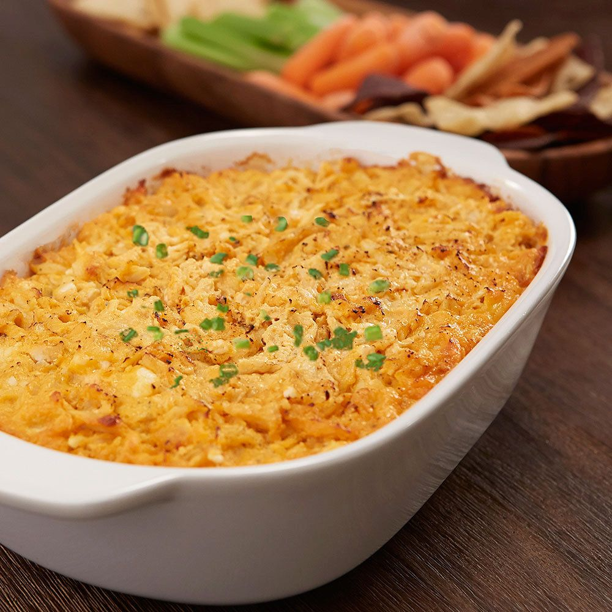

Frank's Red Hot Buffalo Chicken Dip

Description:
This buffalo chicken will be a great Superbowl snack to make all your guests happy! Buffalo chicken dip isn’t buffalo chicken dip unless you add a little extra TLC with Frank's Red Hot!
The offical Frank's Red Hot Buffalo Chicken Dip was taped to my kitchen cabinet growing up. What started as a joke, sadly ended when my mother redid her kitchen. Though the recipe might not be on the cabinet anymore, it is enscribed in my mind.
All you need you is shredded chicken, Frank's Red Hot Sauce, cream cheese, Kraft Ranch Dressing, and blue cheese crumbles. (And of course, salt and pepper.)
Ingredients:
- 2 cups shredded cooked chicken
- 1 package (8 ounces) cream cheese, softened
- 1/2 cup Franks Red Hot Sauce
- 1/2 cup ranch dressing
- 1/2 cup blue cheese crumbles
- Salt and Pepper **to taste on Chicken**
Directions:
- preheat oven to 375
- season shredded chicken with salt and pepper
- mix all ingredients to a bowl
- chicken
- cream cheese
- hot sauce
- ranch
- blue cheese
- pour into shallow dish
sprinkle with chedder chese if desired
- bake for 20 minutes
if sprinkled with cheese broil for additional 2 minutes to crisp the cheese.
- serve with chips or crackers
HomePage